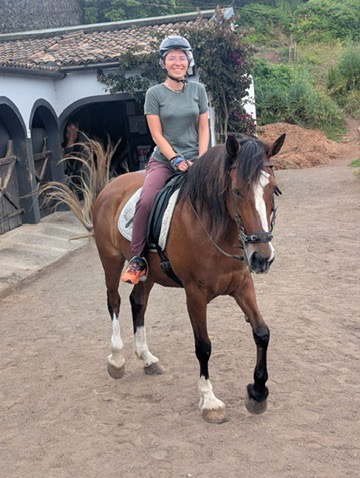
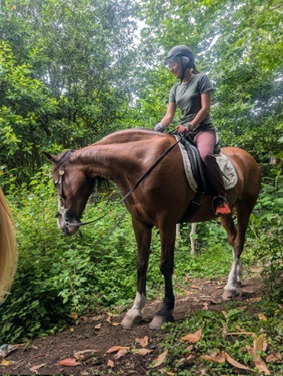
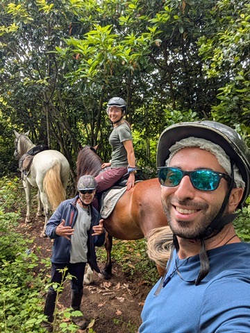
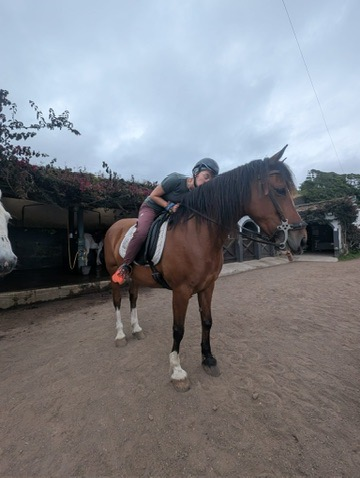
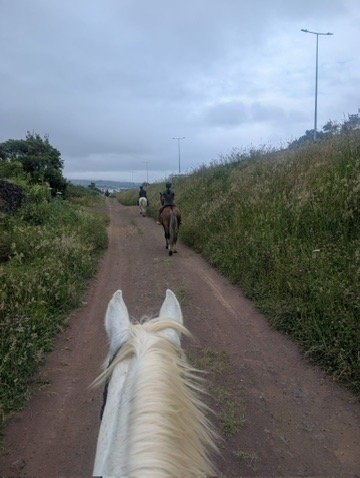

I spend a lot of time on bikes. Road bikes, gravel bikes, the occasional borrowed city bike that handles like a shopping trolley — two wheels are my default mode of exploring. So when someone in Sao Miguel suggested horse riding, my first thought was practical: this is a completely different set of muscles, a completely different negotiation with terrain, and a completely different kind of attention required. My second thought was yes.
Meeting the horse
The thing about horses that nobody tells you before you get on one is that the introduction matters. Before you ride, you spend time with the animal — you let it smell your hand, you stand close enough for it to understand you're not a threat, you pay attention to its attention. It is nothing like getting on a bike. A bike doesn't have opinions about you. A horse is deciding, continuously, whether you're worth cooperating with.

First introduction. She was deciding about me. I was deciding about everything.
There is a specific kind of happiness in connecting with an animal. Not the loud kind — the quiet kind, the kind that comes from being understood by something that doesn't share your language and figures it out anyway. My horse was patient with me. I tried to be patient with myself.

At home in the Azores. The horse was clearly more comfortable on this terrain than I was.
The ride
Riding through the Sao Miguel landscape on horseback is a different version of the island than the one you see from a car or on a trail. You're at a different height, moving at a different rhythm, and the horse notices things you wouldn't — a sound in the grass, a change in the ground underfoot. The green hills, the hydrangea hedges, the ocean appearing between rises in the land: all of it at a walking pace, all of it immediate.

Living my best life. Riding a horse in a paradise island. Not a bad day's work.
The people you ride with
Horse riding, it turns out, collects a certain kind of traveller. People who want to slow down deliberately, who are interested in something other than just covering distance. Our group was small and the conversation on the trail was the easy, interrupted kind — a sentence here, a pause there, the ride continuing either way. By the end, everyone felt like they'd known each other for longer than an afternoon.

The riding group. A line of people going slowly through a very beautiful place.
Saying goodbye
At the end of every horse ride, you need say goodbye properly. This was explained to me by the guide and initially I thought it was performative — a tourism thing — and then I did it and it wasn't performative at all. You spend two hours in quiet communication with an animal, you cross terrain together, and it seems correct to mark the end of that with some acknowledgement. I kissed her gently. She didn't object.

Kiss a horse, say thank you. The guide was right. It's not performative. It's just correct.
I walked back to my guesthouse through the same landscape I'd just ridden through. It looked the same and different — the way places do after you've experienced them at a different speed. The Azores has a way of giving you new versions of itself every time you look. The horse was one of the best ones.

On the road again. Different vehicle. Same restlessness. Completely worth it.